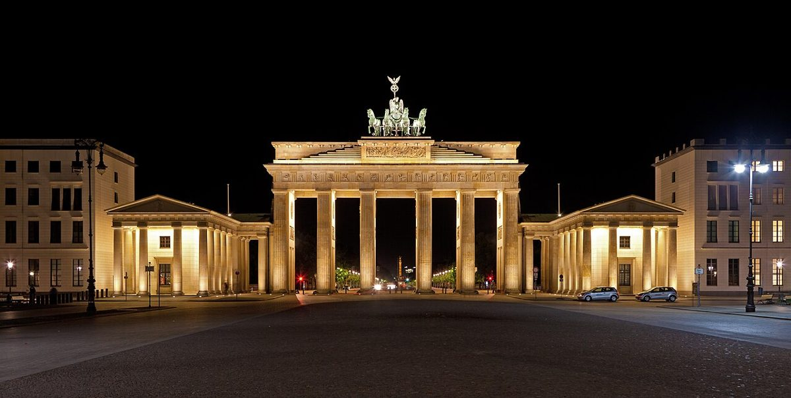

Découvrez la Porte de Brandebourg à Berlin : Un Symbole Historique

La Porte de Brandebourg est l'un des monuments les plus emblématiques de Berlin, symbolisant à la fois l'histoire tumultueuse et l'unité de l'Allemagne. Située au cœur de la ville, cette porte néoclassique attire des millions de visiteurs chaque année. Que vous soyez passionné d'histoire, amateur d'architecture ou simplement curieux, ce site incontournable mérite une place de choix dans votre itinéraire berlinois.
Un Peu d'Histoire
Construite entre 1788 et 1791, la Porte de Brandebourg est l'œuvre de l'architecte Carl Gotthard Langhans. Inspirée par les propylées de l'Acropole d'Athènes, elle représente un symbole de paix et de triomphe. Au fil des siècles, elle a été témoin de nombreux événements historiques, notamment la division et la réunification de l'Allemagne. Aujourd'hui, elle incarne la liberté et l'espoir pour le peuple allemand et le monde entier.
Conseils pour la Visite
Anreise : La Porte de Brandebourg est facilement accessible en transports en commun. Vous pouvez prendre le métro (U-Bahn) jusqu'à la station Brandenburger Tor ou le bus jusqu'à l'arrêt du même nom. Si vous préférez marcher, elle se trouve à quelques pas de la Potsdamer Platz et de l'emblématique Unter den Linden.
Meilleure Période : Pour éviter la foule, privilégiez une visite tôt le matin ou en soirée, lorsque les lumières illuminent magnifiquement la porte. Le printemps et l'automne sont également des périodes idéales pour profiter des températures agréables et des couleurs changeantes de la ville.
Les Incontournables Autour de la Porte de Brandebourg
1. Unter den Linden : Cette avenue historique s'étend de la Porte de Brandebourg jusqu'à la Schlossbrücke. Promenez-vous le long de ses larges trottoirs bordés d'arbres et admirez les bâtiments majestueux qui la jalonnent.
2. Le Mémorial de l'Holocauste : Situé à quelques minutes à pied, ce mémorial est un lieu de réflexion et de recueillement. Ses blocs de béton disposés en grille créent une atmosphère émouvante.
3. Le Reichstag : Le siège du Parlement allemand est un autre site incontournable. Ne manquez pas de visiter sa coupole en verre, qui offre une vue imprenable sur la ville.
4. Le Tiergarten : Ce grand parc urbain est l'endroit idéal pour une pause détente après votre visite. Vous pouvez y faire une promenade agréable ou même pique-niquer.
Où Manger Autour de la Porte de Brandebourg
Après avoir exploré ce symbole berlinois, offrez-vous une pause gourmande. Dans les environs, vous trouverez de nombreux cafés et restaurants proposant des spécialités locales et internationales. Pour une expérience typiquement allemande, essayez un Currywurst ou un Schnitzel dans l'un des petits bistros du quartier. Si vous préférez quelque chose de plus léger, optez pour une délicieuse salade ou un sandwich dans l'un des nombreux cafés branchés.
Conclusion
La Porte de Brandebourg est bien plus qu'un simple monument : c'est un symbole fort de l'histoire et de la culture allemande. Que vous y passiez une heure ou une demi-journée, cette visite restera gravée dans votre mémoire. Alors, préparez votre itinéraire, profitez des conseils pratiques et laissez-vous immerger dans l'atmosphère unique de ce lieu mythique.
Haiktec
- Le Petit Guide du Succès pour les Petits Restaurants et Cafés
- Planificateur de Budget & Itinéraire pour le Voyage en Forêt-Noire
- Découvrez le Saarland et la Moselle en 7 étapes: Guide pratique pour voyageurs autonomes
Text mit KI erstellt und automatisch geprueft.